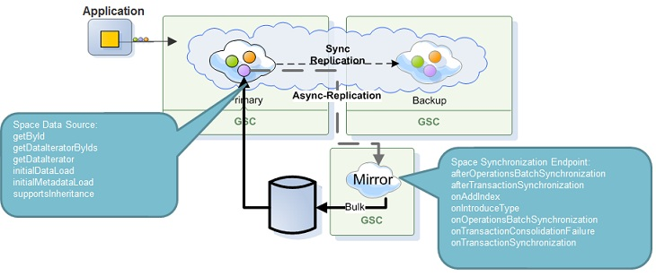

The SpaceDataSource is used by the Space for interacting with the persistency layer in two cases:
Initial data & meta data loading from a data source (i.e. a database).
In LRU mode, when the space needs to read data from the data source (cache miss as a result of read,write,update,take,change).
The space data source API is adequate for different kinds of data sources which could be SQL based, object based and document based. This flexibility is possible due to the fact that every query the space data source implementation receives can be represented differently to support the desired data source. The available representations are: SQL Query, Space Document and POJO. In addition, SpaceDataSource provides hook points for new types introduction and dynamically added indexes.

Persisting data to the data source is explained in the Space Synchronization Endpoint API page.
Space data source configuration can be done using a Spring bean or via code as shown in the following examples:
<?xml version="1.0"?>
<beans xmlns="http://www.springframework.org/schema/beans"
xmlns:xsi="http://www.w3.org/2001/XMLSchema-instance"
xmlns:os-core="http://www.openspaces.org/schema/core"
xsi:schemaLocation="http://www.springframework.org/schema/beans http://www.springframework.org/schema/beans/spring-beans-[%=Versions.spring-short%].xsd
http://www.openspaces.org/schema/core http://www.openspaces.org/schema/[%=Versions.product-version-short%]/core/openspaces-core.xsd">
<bean id="propertiesConfigurer" class="org.springframework.beans.factory.config.PropertyPlaceholderConfigurer"/>
<bean id="spaceDataSource" class="com.gigaspaces.test.SpaceDataSourceImpl" />
<os-core:embedded-space id="space" space-name="dataSourceSpace" space-data-source="spaceDataSource" />
<os-core:giga-space id="gigaSpace" space="space" />
</beans>
<?xml version="1.0"?>
<beans xmlns="http://www.springframework.org/schema/beans"
xmlns:xsi="http://www.w3.org/2001/XMLSchema-instance"
xmlns:os-core="http://www.openspaces.org/schema/core"
xsi:schemaLocation="http://www.springframework.org/schema/beans http://www.springframework.org/schema/beans/spring-beans.xsd
http://www.openspaces.org/schema/core http://www.openspaces.org/schema/[%=Versions.product-version-short%]/core/openspaces-core.xsd">
<bean id="propertiesConfigurer" class="org.springframework.beans.factory.config.PropertyPlaceholderConfigurer"/>
<bean id="spaceDataSource" class="com.gigaspaces.test.SpaceDataSourceImpl" />
<os-core:embedded-space id="space" space-name="dataSourceSpace" space-data-source="spaceDataSource" />
<os-core:giga-space id="gigaSpace" space="space" />
</beans>
SpaceDataSource spaceDataSource = new MySpaceDataSource();
GigaSpace gigaSpace = new GigaSpaceConfigurer(new EmbeddedSpaceConfigurer("space")
.schema("persistent")
.cachePolicy(new LruCachePolicy())
.spaceDataSource(spaceDataSource)
.space()).gigaSpace();
The SpaceDataSource abstract class should be extended in order to provide a custom behavior where needed.
The space data source API provides a way to introduce types to the space on its initialization before initial data load occurs. This is necessary since many data source solutions work in a document fashion (For example, Cassandra) where no POJOs are involved.
Type introduction is done by the SpaceDataSource.initialMetadataLoad method. Its implementation should return a DataIterator instance which contains the space type descriptors of the types to be introduced. Derived types should be returned from the DataIterator after their super types.
POJOs introduction is done automatically so there's no need to generate space type descriptors for POJOs.
The following example shows how a custom derived SpaceDocument type is introduced to the space on its initialization:
public class DocumentBasedSpaceDataSource extends SpaceDataSource {
@Override
public DataIterator<SpaceTypeDescriptor> initialMetadataLoad() {
// Create a person document
SpaceTypeDescriptor personTypeDescriptor = new SpaceTypeDescriptorBuilder("PersonDocument")
.idProperty("id")
.addFixedProperty("name", String.class)
.create();
// Create a student document with PersonDocument as its super type
SpaceTypeDescriptor studentTypeDescriptor = new SpaceTypeDescriptorBuilder("StudentDocument", personTypeDescriptor)
.addFixedProperty("average", Double.class)
.create();
// DefaultDataIterator will return PersonDocument's type descriptor first
return new DefaultDataIterator(personTypeDescriptor, studentTypeDescriptor);
}
}
When the space needs to read data from the data source the SpaceDataSource.getDataIterator is invoked. The method receives a DataSourceQuery instance parameter which specifies the type the query is for and allows to get a SQL query, Object template or a SpaceDocument representation of the query.
The following example shows a SpaceDataSource.getDataItereator implementation:
public class MySpaceDataSource extends SpaceDataSource {
@Override
public DataIterator<Object> getDataIterator(DataSourceQuery query) {
String typeName = query.getTypeDescriptor().getTypeName();
System.out.println("Queried type name is: " + typeName);
if (query.supportsTemplateAsObject()) {
// Read from data source using POJO...
Object obj = query.getTemplateAsObject();
// ...
} else if (query.supportsTemplateAsDocument()) {
// Read from data source using document...
SpaceDocument document = query.getTemplateAsDocument();
// ...
} else if (query.supportsTemplateAsSQLQuery()) {
// Read from data source using SQL query...
DataSourceSQLQuery sqlQuery = query.getAsSQLQuery();
// ...
}
return null;
}
}
The space data source API includes the getById method which gets invoked whenever the space needs to read an object from the data source by its Id. An example for this case is when a write operation has been executed and the space needs to make sure the written object does not already exist in the data source (LRU mode).
This is great because many data source solutions, mainly NoSQL ones, are optimized for reading entries by their Ids. SpaceDataSource.getById does not have to be overridden and implemented since the default implementation delegates the getById method to the getDataIterator method which is good enough for most RDBMS data sources.
The following example shows a SpaceDataSource.getById implementation which creates an SQL query from the provided DataSourceIdQuery parameter:
public class SpaceDataSourceImpl extends SpaceDataSource {
@Override
public Object getById(DataSourceIdQuery idQuery) {
StringBuilder builder = new StringBuilder("SELECT * FROM ");
builder.append(idQuery.getTypeDescriptor().getTypeName());
builder.append(" WHERE ");
builder.append(idQuery.getTypeDescriptor().getIdPropertyName());
builder.append(" = ");
builder.append(idQuery.getId());
// Execute the query... (should return a single value)
return ...
}
}
The space data source implementation can specify whether it supports data types inheritance using the SpaceDataSource.supportsInheritance method (default=true).
When a data source does not support types inheritance it means that when the space queries the data source it needs to provide it with information regarding the derived types of the queried type. This is done simply by invoking the getDataIterator for all the derived types of the queried type. For example, a Person and Student classes where Student extends Person, if Person was queried and the data source does not support inheritance, getDataIterator will be invoked twice - for Student and for Person since Student is derived from Person. If the data source supports inheritance, getDataIterator will be invoked only once with Person as its type.